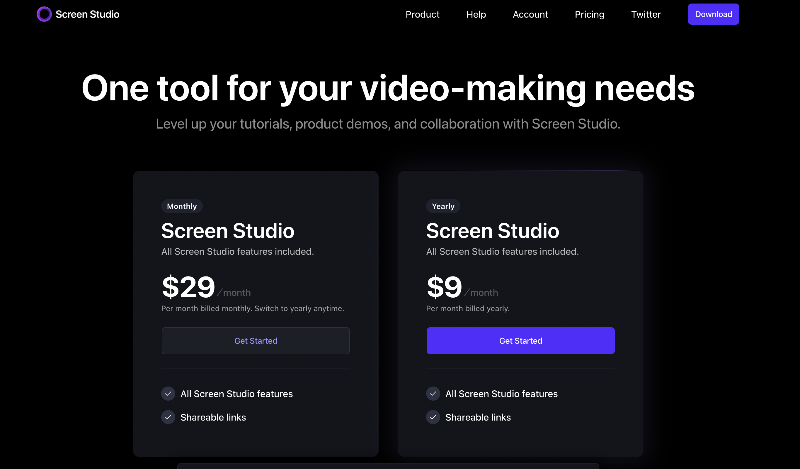
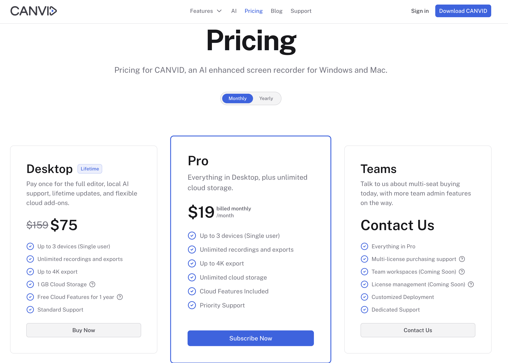
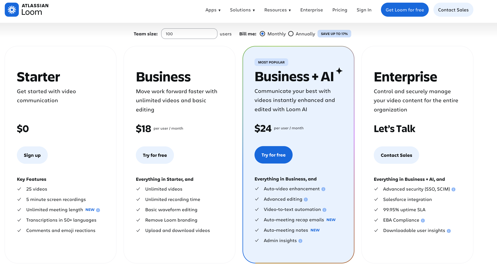
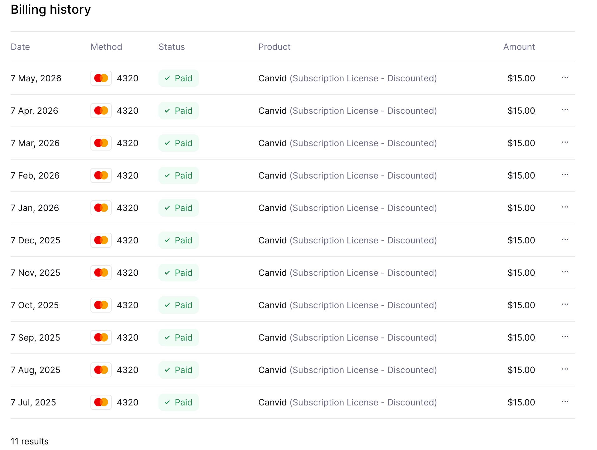

它叫 Osmo Banana。不是一个宏大的 SaaS，就是我给自己做的本地录屏工作台：录完、修漂亮、直接导出。
ScreenStudio、Canvid、Loom 都挺好。但我不需要追着他们做。我的场景很窄：全员 Mac、本地录制、本地导出，最后发微信、飞书、小红书或客户群。



它提醒我的不是“我要做一个更大的产品”，而是“我有一个足够具体的问题”。我不需要云存储、分享链接、团队后台，也不需要完整剪辑套件。

不跨平台，不做云，不做分享链接，不做专业剪辑。先把“不做什么”讲清楚，剩下的东西才会变得锋利。
我们全员 Mac，我先把一个平台做好。
项目文件就在 ~/Movies/Osmo Recordings。
录完不再进二剪软件，导出就能发。
所以 slides 不负责替我报流程。接下来我只保留三个判断标准：画面要能发、操作要跟得上、导出要可信。
录完不用再进二剪软件补救。
观众的注意力跟着我的点击和鼠标走。
预览是什么，导出就是什么。
我可以给捕获画面加 padding、圆角和阴影，再放到纯色、渐变、blurred-source、图片或动态背景上。关键是：预览和导出共用同一个 renderer。
录屏和 cursor log 一起保存。
frame、shadow、background 一起调。
看到的就是最终 renderer。
标注、音乐、人像一起合成。
导出时不再猜效果。
录屏时我已经拿到了 cursor log。点击聚在一起的地方，通常就是我希望观众看的地方，所以我不再手工猜镜头。
Zoom tab 从 cursor log 重新生成关键帧。
自动只是起点，最后判断还是交给人。
dot / ring / arrow / square、颜色、halo glow、click ripple。
有些 demo 不需要人出镜；但当我需要解释复杂操作时，webcam、标注、cursor 和音乐必须一起进入导出，而不是散落在几个工具里。
圆形或圆角 PiP，放在任意角落。
Vision portrait segmentation，不需要绿幕。
文字、箭头、高亮、MP3/M4A 都 bake 进导出。
所有 .osmoproj 都自动出现在 Library。我可以搜索、排序、⌘-click / ⇧-click 多选，然后 Delete N 或 Export N。
从 ~/Movies/Osmo Recordings 自动扫描。
多选后顶部动作条直接出现。
共享 preset，顺序队列导出。
我更想先做一个原子化 CLI：让 Claude Code、Codex 这类 agent 先知道 app 能做什么、不能做什么、需要什么权限。
我不需要它赢下整个市场；我需要它把自己的问题解决得足够干净。
不为不需要的 SaaS 能力买单。
Mac、本地、demo、分享。
画面、zoom、cursor、人像、标注、音乐一次导出。